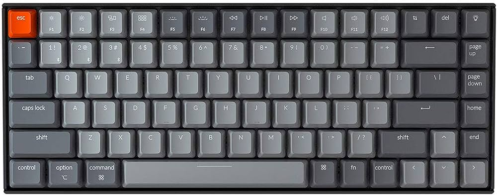

Las fuentes cuyo nombre sea compuesto se escriben entre comillas.
La visualización exacta dependerá de las fuentes instaladas en cada ordenador.
Los comentarios cumplen una determinada función, permiten a los navegadores que no comprenden el lenguaje CSS no tener que leer el código. Es decir, no son obligatorios pero evitan problemas, además tienen otra utilidad y es que permiten hacer anotaciones en el código fuente.
En este 1er caso práctico veremos cuestiones de formatos. Visualizar el apéndice1. aaaaaaaaaaaaaaaaaaaaaaaaaaaaaa aaaaaaaaaaaaaaaaaaaaaaaaaaaaaaa